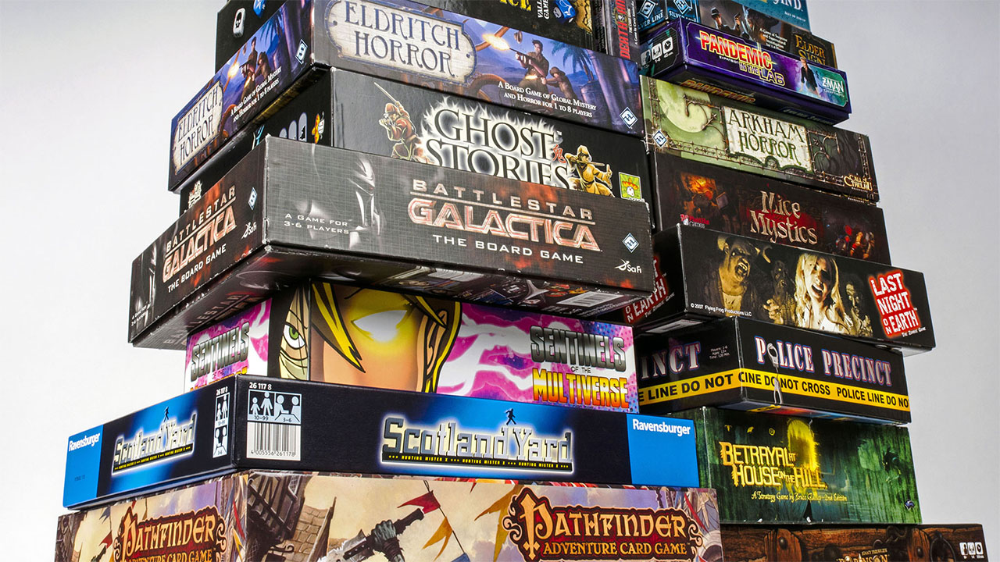

-Creative Writing: I regularly write short stories and have gotten a couple published over the years, on top of that I've been working on a couple of larger projects though realistically it's primarily just a hobby rather than anything whcih will come to any greater fruition.
-Tabletop Roleplaying Games: I've been playing, and running tabletop roleplaying games for over a decade at this point. I don't typically have a strong system preference as I've run more common stuff like pathfinder, along with fairly esoteric systems like Wild Talents, Anima, PTU, and TBZ.
-Board Games: No, not monopoly or scrabble, I enjoy games more along the more modern tabletop games such as Twilight Imperium, Lords of Waterdeep, Dead of Winter, Terra Mystica, KDM, and other assorted games. That said this is definitely more of a minor hobby that I enjoy, but don't engage in regularly.
-Cooking: Not as much as of late, though when I have enough time (and the money to worry about quality ingredients) I love trying out new recipes and types of cuisine. Being a college student though most of the time this is less of a hobby at this point, and more just a useful skill for making groceries stretch a bit further and avoiding any need to eat out.
-The Rest: Yeah I enjoy the typical classics of video games, watching shows/movies, listening to music, and reading a good book or the occasional comic. Typically I lean towards fantasy and scifi of varying types, though other genres can be a ton of fun, while with music I don't have overtly strong genre preferences at this point and tend to just listen to an eclectic mix.
For the most part my summer was rather uneventful, though a couple things of note happened.
-I started working over at the OTC Speech Communications Center & Carol Jones Writing Center (definitely a resource everyone should check out and use) while doing summer classes.
-I flew out of state to meet up with a few long time friends in New Jersey, and subsequently spent most of the two weeks doing a lot of tabletop and video gaming with them, along with seeing the local sights.
-I finished up a campaign I'd been running for the past two or so years, and after a few shorter over the fall semester and winter break I'm getting ready to start GMing a new campaign.